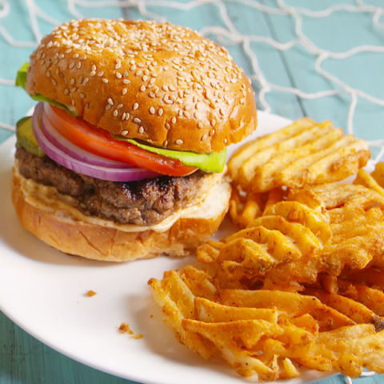
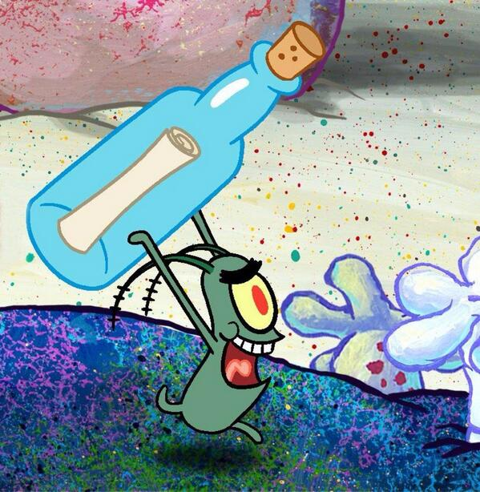

The Krabby-Patty (but not really)

Description
The famed burger from Krusty Krab! Desired by many, including the
devious Plankton, who wants to steal its secret formula.
It is a vegetarian hamburger of sorts made from seaweed-sea buns, undersea
vegetables, condiments, and a patty; cheese can be added too.
Ingredients
- For the patties-
- 2 Tbsp of olive oil
- 1/4 cup minced red bell pepper
- 1/4 cup minced yellow onion
- 1 1/4 cup chickpeas (cooked or canned)
- 1 14oz/400g package hearts of palm
- 2 Tbsp ground walnuts
- 2 Tbsp vegan mayo
- 2 tsp stone ground mustard
- 1 Tbsp dill
- 1/4 tsp pink Himalayan salt
- 1/4 tsp black pepper
- Sprinkle of cayenne
- The secret ingredient-
- Kidding, it's still a mystery~
- For the toppings-
- Hamburger buns
- Ketchup
- Mustard
- Mayonnaise
- Cheese
- Pickles
- Lettuce
- Tomatoes
- Onions
Steps
- In a pan on medium heat add olive oil, red bell pepper, and yellow onion.
Cook for 5 minutes. In the meantime mash all chickpeas
and add to pan. Cook for another 5 minutes and set
aside.
- In a bowl squish all hearts of palm. Once all are squished
combine with the chickpea mixture.
- Preheat oven to 190°C/375°F. Add remaining ingredients into
patty mixture and knead until all ingredients are well combined.
- Form mixture into desired sized patties and place in oven for 10 minutes
each side. Once time is up remove from oven and allow 5 minutes to cool.
- In a pan on medium heat add patties and cook for 3 minutes each side. Once
ready place patties on buns along with toppings. Use sauce of choice and enjoy!

"I'm as evil As ever. I'll prove it right now by stealing the Krabby Patty secret formula."
Recipe credits to - Krabby Patty - Vegan Easy